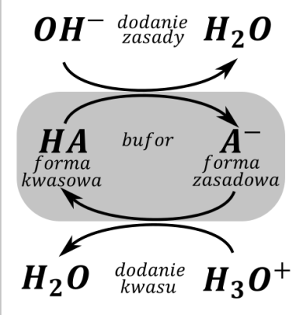
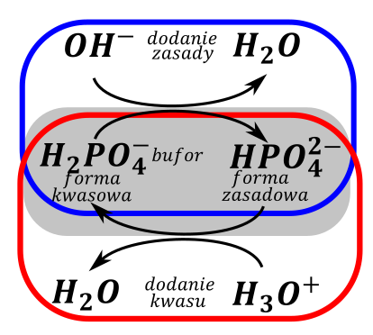
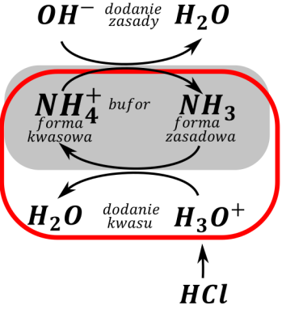
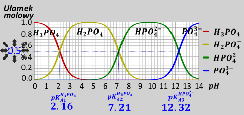
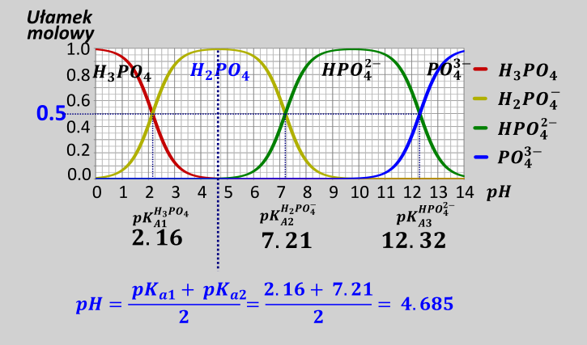
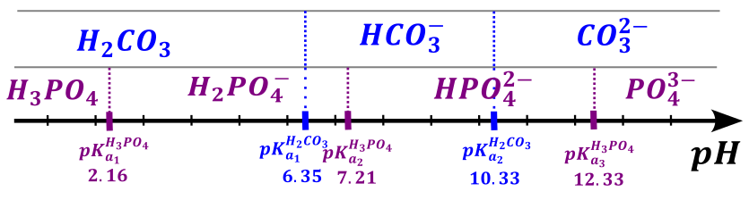
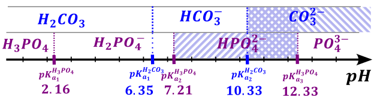
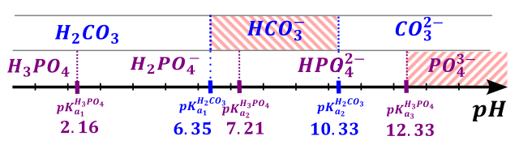
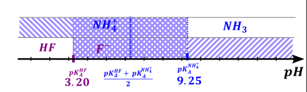
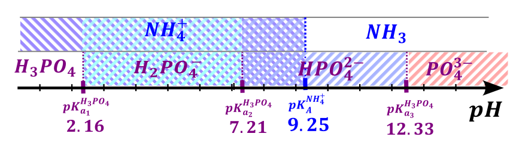

Bufor jest to coś, co stabilizuje dany parametr układu, szczególnie bufory spotyka się w chemii i informatyce. W chemii możemy mieć bufory \(pH\) i bufory potencjału, matura szczególnie zwraca uwagę na bufory \(pH\).
Bufor \(pH\) oczywiście stabilizuje wartość \(pH\) roztworu, dodatek silnego kwasu lub silnej zasady niewiele zmienia \(pH\) roztworu.
Z chemicznego punktu widzenia można powiedzieć, że bufor (mieszanina buforowa) jest mieszaniną słabego kwasu i sprzężonej słabej zasady w sensownych stosunkach (zakres stężeń od 20-1 do 1-20). Bufory rozważamy tylko i wyłącznie jonowo, czyli dysocjujemy na jony wszelkie związki (ale nie hydrolizujemy). Roztwór buforowy występuje, jeżeli jest słaba sprzężona para kwas- zasada, nie ma znaczenia skąd się ona wzięła tzn. czy dodaliśmy bezpośrednio oba związki – kwas i zasadę czy otrzymaliśmy je przez reakcje.
Żeby powiedzieć czy jest bufor należy odpowiedzieć sobie na 3 pytania:
- czy występuje sprzężona para kwas – zasada
- czy ta para to jest słaba, tzn. czy kwas lub zasada jest słaba (wystarczy jedno)
- czy kwas i zasada są zmieszane w sensownym stosunku:
Rozważmy kilka roztworów zawierających mieszaniny różnych związków. Pisząc jony, z jakich zbudowany są dane związki widzimy łatwo, czy jest w układzie znajdują się dwie drobimy, które będą sprzężoną słabą parą kwas zasada:
\[NH_{3}\ i\ NH_{4}Cl \rightarrow \mathbf{N}\mathbf{H}_{\mathbf{3}}\ i\ \mathbf{N}\mathbf{H}_{\mathbf{4}}^{\mathbf{+}}\ ;Cl^{-}\ \ OK\]
Amoniak to słaba zasada jon NH4+ jest sprzężonym kwasem
\[KHCO_{3}\ i\ Na_{2}CO_{3} \rightarrow \mathbf{HC}\mathbf{O}_{\mathbf{3}}^{\mathbf{-}}\ \ \ i\ \ \ \mathbf{C}\mathbf{O}_{\mathbf{3}}^{\mathbf{2 -}}\ \ \ \ OK\]
Jon wodorowęglanowy jest słabym kwasem, jon węglanowy – sprzężoną zasadą.
\[HF\ i\ NaF \rightarrow \mathbf{HF}\ i\ Na^{+} + \mathbf{F}^{\mathbf{-}} \rightarrow OK\]
\(HF\) to słąby kwas, jon \(F^{-}\) to sprzężona zasada.
\[HCl\ i\ NaCl \rightarrow \mathbf{HCl}\ i\ \mathbf{C}\mathbf{l}^{\mathbf{-}}\ ;\ NIE\ OK,\]
Mimo, że obie drobiny są sprzężone to kwas solny jest silnym kwasem, a więc nie ma warunku słabości
\[Na_{2}HPO_{4}\ i\ H_{3}PO_{4} \rightarrow 2Na^{+} + \ HPO_{4}^{2 -}i\ H_{3}PO_{4} \rightarrow Nie\ OK,\ \]
Mimo, że obie drobiny są pochodzą z słabego kwasu (fosforowego (V)) , różnią się więcej niż jednym wodorem,a więc nie są sprzężone. Nie ma warunku sprzężenia. Nie znaczy to jednak, że drobiny te nie mogą przereagować, tak aby stworzyć bufor, jednak zależy to od ich proporcji.
\[K_{2}HPO_{4}\ i\ NaH_{2}PO_{4} \rightarrow 2K^{+} + HPO_{4}^{2 -}\ \ i\ \ \ Na^{+} + H_{2}PO_{4}^{-}\ \ \ OK\]
Te drobiny są sprzężone, różnią się jednym protonem i pochodzą od słabego kwasu – fosforowego.
\[NaNH_{2}\ i\ NH_{3} \rightarrow Na^{+} + NH_{2}^{-}\ \ i\ \ \ NH_{3}\ \ \ \ \ NIE\ OK\]
Pomimo, że drobiny są sprzężone, to \(NH_{3}\) w tej parze powinien pełnić funkcję kwasu, a jak wiemy jest zasadą w roztworze wodnym. Z kolei \(NH_{2}^{-}\) jest silną zasadą. Nie ma spełnionego warunku słabości, a więc układ nie jest buforem.
Natomiast bufor można również otrzymać w reakcji, nie tylko przez proste zmieszanie odpowiednich jonów. Rozważmy przykład:
Przyrządzono roztwór przez rozpuszczenie 1.5 mola \(\left( NH_{4} \right)_{2}\ SO_{4}\) i 2 mola \(NaOH\) w wodzie. Czy jest bufor?
Oczywiście roztwór ten nie wygląda początkowo jak bufor, ale rozważając dysocjację obu związków dostajemy:
\[\left( NH_{4} \right)_{2}SO_{4} \rightarrow 2NH_{4}^{+} + SO_{4}^{2 -}\]
\[NaOH \rightarrow Na^{+} + OH^{-}\]
Czyli ilość moli amonowych będzie dwukrotnością użytego siarczanu amonu, ilość moli jonów OH- będzie równa ilości użytego \(NaOH\)
\[\left( NH_{4} \right)_{2}SO_{4} - - - 2NH_{4}^{+}\]
\[1 - 2\]
\[1.5 - n_{NH_{4}^{+}}\]
\[n_{NH_{4}^{+}}^{0} = 3\]
Na pierwszy rzut oka nie wygląda, ale jak rozważymy reakcje , widzimy, że otrzymujemy:
\[NH_{4}^{+} + OH^{-} \rightarrow NH_{3} + H_{2}O\]
Możemy zrobić tabelkę, aby obliczyć końcową ilość drobin:
| \[\mathbf{N}\mathbf{H}_{\mathbf{4}}^{\mathbf{+}}\] | \[OH^{-}\] | \[\mathbf{N}\mathbf{H}_{\mathbf{3}}\] | |
|---|---|---|---|
| \[n^{0}\] | \[3\] | \[2\] | \[0\] |
| \[\Delta n\] | \[- x\] | \[- x\] | \[+ x\] |
| \[n^{k}\] | \[1\] | \[0\] | \[2\] |
Jak widać po reakcji otrzymano roztwór buforowy, bo mamy jednocześnie sprzężone drobiny \(NH_{4}^{+}\) i \(NH_{3}\). Są one słabym kwasem i słabą zasadą, i jednocześnie występują w sensownej ilości.
Nie zawsze zmieszanie słabego kwasu i słabej zasady daje bufor, zależy to od proporcji, w których zmieszano reagenty, np.:
Przyrządzono roztwór przez rozpuszczenie 1.5 mola \(\left( NH_{4} \right)_{2}SO_{4}\) i 4 mola \(NaOH\) w wodzie. Czy jest bufor?
Mimo użycia tych samych reagentów, w tym wypadku nie otrzymamy już buforu.
\[NH_{4}^{+} + OH^{-} \rightarrow NH_{3} + H_{2}O\]
Rozważając tabelką ilość moli końcowych po reakcji analogicznej dostajemy:
| \[NH_{4}^{+}\] | \[OH^{-}\] | \[NH_{3}\] | |
|---|---|---|---|
| \[n^{0}\] | \[3\] | \[4\] | \[0\] |
| \[\Delta n\] | \[- x\] | \[- x\] | \[+ x\] |
| \[n^{k}\] | \[0\] | \[1\] | \[3\] |
Widzimy, że całkowicie przereagowują jony \(NH_{4}^{+}\). Nie będziemy wtedy mieli jednego z dwóch wymaganych składników buforu – sprzężonego kwasu, a więc również roztwór nie będzie buforem.
Dla słabych kwasów wieloprotonowych możemy mieć tyle różnych buforów, ile mamy kwaśnych protonów, gdyż każdy kwaśny wodór w słabym kwasie ma swoje \(pK_{a}\) i będzie stabilizował inne \(pH\). Inny słowy, każdy proton w słabym kwasie ma „swój” bufor, wynikający z jego urywania i przyłączania.
Czyli np. Dla kwasu \(H_{3}PO_{4}\ \)możemy mieć 3 różne bufory, opierające się na kolejnych protonach:
\(H_{3}PO_{4}\) i \(H_{2}PO_{4}^{-}\) oraz \(H_{2}PO_{4}^{-}\) i \(HPO_{4}^{2 -}\)oraz \(HPO_{4}^{2 -}\) i \(PO_{4}^{3 -}\)-. Bufory oparte na kolejnych wodorach w kwasie wieloprotonowym stabilizują różne wartości \(pH\). Rozpatrując uzyskanie buforu z kwasu wieloprotonowego wodory urywamy wodór po wodorze tzn. najpierw całkowicie urywamy pierwszy wodór i dopiero potem kolejny; nie wszystkie wodory na raz; aż do całkowitego wyczerpania wodorów. Analogicznie przyłączamy wodory, również wodór po wodorze, kolejną reakcję przyłączenia wodoru rozpatrujemy dopiero po całkowitym przyłączeniu poprzedniego
Sporządzono roztwór przez zmieszanie 1mola \(H_{3}PO_{4}\) i 2.2 mola \(NaOH\) w wodzie. Czy otrzymano bufor, a jeżeli tak to jaki?
Rozpatrujemy urwanie pierwszego wodoru:
\[H_{3}PO_{4} + OH^{-} \rightarrow H_{2}PO_{4}^{-} + H_{2}O\ \]
| \[H_{3}PO_{4}\] | \[OH^{-}\] | \[H_{2}PO_{4}^{-}\] | |
|---|---|---|---|
| \[n^{0}\] | \[1\] | \[2.2\] | \[0\] |
| \[\Delta n\] | \[- x\] | \[- x\] | \[+ x\] |
| \[n^{k}\] | \[0\] | \[1.2\] | \[1\] |
Widzimy, że po reakcji mamy jeszcze nadmiar jonów \(OH^{-}\), więc rozpatrujemy urwanie kolejnego wodoru od otrzymanego \(H_{2}PO_{4}^{-}\):
\[\ H_{2}PO_{4}^{-} + OH^{-} \rightarrow HPO_{4}^{2 -} + H_{2}O\]
| \[H_{2}PO_{4}^{-}\] | \[OH^{-}\] | \[HPO_{4}^{2 -}\] | |
|---|---|---|---|
| \[n^{0}\] | \[1\] | \[1.2\] | \[0\] |
| \[\Delta n\] | \[- x\] | \[- x\] | \[+ x\] |
| \[n^{k}\] | \[0\] | \[0.2\] | \[1\] |
Jak widać potrzebujemy rozpatrzeć kolejną reakcję:
\[HPO_{4}^{2 -} + OH^{-} \rightarrow PO_{4}^{3 -} + H_{2}O\]
| \[HPO_{4}^{2 -}\] | \[OH^{-}\] | \[PO_{4}^{3 -}\] | |
|---|---|---|---|
| \[n^{0}\] | \[1\] | \[0.2\] | \[0\] |
| \[\Delta n\] | \[- x\] | \[- x\] | \[+ x\] |
| \[n^{k}\] | \[\mathbf{0.8}\] | \[0\] | \[\mathbf{0.2}\] |
Czyli mamy bufor oparty na \(HPO_{4}^{2 -}\) i \(PO_{4}^{3 -}\)drobiny te stanowią słabą sprzężoną parę kwas – zasada i są w sensownym stosunku
Użycie innej ilości \(OH^{-}\) może spowodować powstanie innego buforu. Np. sporządzenie roztworu przez zmieszanie 1mol \(H_{3}PO_{4}\) oraz 0.8 mola \(OH^{-}\)prowadzi do:
Rozpatrując urwanie pierwszego wodoru dostajemy:
\[H_{3}PO_{4} + OH^{-} \rightarrow H_{2}PO_{4}^{-} + H_{2}O\]
| \[H_{3}PO_{4}\] | \[OH^{-}\] | \[H_{2}PO_{4}^{-}\] | |
|---|---|---|---|
| \[n^{0}\] | \[1\] | \[0.8\] | \[0\] |
| \[\Delta n\] | \[- x\] | \[- x\] | \[+ x\] |
| \[n^{k}\] | \[\mathbf{0.2}\] | \[0.8 - x = 0 \rightarrow\] \[x = 0.8\] |
\[\mathbf{0.8}\] |
Widać, iż w tym wypadku nie ma potrzeby rozpatrywać urywania
kolejnych wodorów, gdyż całkowicie wyczerpaliśmy jony
\(OH^{-}\) podczas pierwszej reakcji. W
tym wypadku otrzymaliśmy bufor \(H_{3}PO_{4}\) i \(H_{2}PO_{4}^{-}\)
Możemy powiedzieć, że każdym buforze występują dwie drobiny: sprzężonego kwasu i sprzężonej zasady; inaczej bufor składa się z formy kwaśnej (tej drobiny w parze, która ma wodór więcej) i formę zasadową (tej, co ma wodór mniej). Jeżeli dodajesz kwasu (czyli źródła jonów \(H^{+}\), np. \(H_{3}O^{+}\))to ten kwas zżera formę zasadową tworząc z niej formę kwasową buforu. Natomiast dodając zasady (np. jonów\(OH^{-}\)) to zżera ona formę kwasową i robiąc formę zasadową (oraz wodę). Można to przedstawić na schemacie:

Podczas pracy buforu zostają te same formy buforu – kwaśna i zasadowa, różnią się one tylko stosunkiem obu form, a więc mamy ten sam bufor, czyli \(pH\) nie zmienia się znacznie.
Np. Mamy bufor fosforanowy oparty na \(H_{2}PO_{4}^{-}\) i \(HPO_{4}^{2 -}\).Do jednej próbki zawierającej ten bufor odajemy mocnego kwasu (np. \(HCl\)), a do drugiej mocnej zasady (np. \(NaOH\)). Jakie reakcje zajdą??
Na początku musimy zobaczyć, który z jonów fosforanowych jest formą kwaśną, a który zasadową buforu. Widzimy, że wśród jonów sprzężonych stanowiących bufor więcej wodorów ma \(H_{2}PO_{4}^{-}\) więc jest on formą kwaśną, natomiast jon \(HPO_{4}^{2 -}\) ma o jeden wodór mniej, a więc jest formą zasadową. Możemy to przedstawić na schemacie:

Widzimy, że reakcja zachodząca po dodatku kwasu to:
\[HPO_{4}^{2 -} + H_{3}O^{+} \rightarrow H_{2}PO_{4}^{-} + \ H_{2}O\]
Natomiast po dodatku zasady:
\[H_{2}PO_{4}^{-} + OH^{-} \rightarrow HPO_{4}^{2 -} + \ H_{2}O\]
Czy można dodać wielką ilość kwasu lub zasady, a bufor wytrzyma?
Nie, w pewnym momencie dodając dużo ilość np. kwasu przekroczymy ilość formy zasadowej, wówczas ta forma zasadowa ona przereaguje do końca i już buforu nie będzie. Dostateczna ilość kwasu zwyczajnie zeżre całą formę zasadową. Proces taki nazywa sie przepełnieniem buforu i powoduje on, że nie mamy wtedy jednego ze składników buforu, a więc nie mamy początkowego buforu. Możemy mieć wówczas inny bufor, oparty na innym wodorze niż wyjściowy, szczególnie dla kwasów wieloprotonowych, a może być tak, że w ogóle nie mamy buforu, mamy nadmiar mocnego kwasu lub zasady.
Mieliśmy bufor, w którym znajdował się 1 mol \(HPO_{4}^{2 -}\)i 1 mol \(H_{2}PO_{4}^{-}\). Dodaliśmy 1.5 mola \(HCl\). Czy będziemy mieli bufor, a jeżeli tak to jaki?
Zgodnie z schematem możemy zapisać, iż najpierw zachodzi reakcja przyłączenia wodoru do formy zasadowej buforu \(HPO_{4}^{2 -}\):
\[HPO_{4}^{2 -} + H_{3}O^{+} \rightarrow H_{2}PO_{4}^{-} + \ H_{2}O\]
Robimy tabelkę dla powyższej reakcji:
| \[HPO_{4}^{2 -}\] | \[H_{3}O^{+}\] | \[H_{2}PO_{4}^{-}\] | \[H_{2}O\] | |
|---|---|---|---|---|
| \[n^{0}\] | \[1\] | \[1.5\] | \[1\] | |
| \[\Delta n\] | \[- x\] | \[- x\] | \[+ x\] | \[+ x\] |
| \[n^{k}\] | \[1 - x = 0 \rightarrow x = 1\] | \[1.5 - x = 0.5\] | \[1 + x \rightarrow 2\] | \[+ x\] |
Widzimy, iż w tym wypadku całkowicie przereagowuje forma zasadowa buforu (\(HPO_{4}^{2 -}\)), a więc mamy przepełnieni buforu, ilość tej formy spada do zera. Kolejno nadmiarowe jony \(H_{3}O^{+}\) przyłączają się do jonu \(H_{2}PO_{4}^{-}\), bo jest to jedyny jon, do którego można przyłączyć wodór, w myśl reakcji:
\[H_{2}PO_{4}^{-} + H_{3}O^{+} \rightarrow H_{3}PO_{4} + H_{2}O\]
Ilość drobin po reakcji rozważamy tabelką, oczywiście początkowa ilość jonów \(H_{2}PO_{4}^{-}\) i \(H_{3}O^{+}\) jest taka jak końcowa po rozpatrzeniu poprzedniej reakcji:
| \[H_{2}PO_{4}^{-}\] | \[H_{3}O^{+}\] | \[H_{3}PO_{4}^{\ }\] | \[H_{2}O\] | |
|---|---|---|---|---|
| \[n^{0}\] | \[2\] | \[0.5\] | \[0\] | |
| \[\Delta n\] | \[- x\] | \[- x\] | \[+ x\] | \[+ x\] |
| \[n^{k}\] | \[2 - x = 1.5\] | \[0.5 - x = 0\] | \[0 + x \rightarrow 0.5\] | \[+ x\] |
W tej reakcji ulegają całkowitemu przereagowaniu jony \(H_{3}O^{+}\), mamy po reakcji bufor oparty
na
\(H_{2}PO_{4}^{-}\) i \(H_{3}PO_{4}^{\ }\), ale to jest zupełnie
inny bufor niż ten bufor startowy, a więc ma totalnie inne pH.
Najczęściej \(pH\) buforu jest w okolicach lekko kwaśne – lekko zasadowe, a więc w roztworze występuje małe stężenie jonów \(H^{+}\) i \(OH^{-}\). Przedstawione dalej rozważania są dla takiego buforu, bufor mocno kwaśny albo mocno zasadowy należy liczyć tabelką dotyczącą reakcji hydrolizy, o czym dalej. Są to jednak skrajnie nietypowe układy i wydaje się, że autorzy zadań i podręczników sami o nim nie do końca wiedzą. Wyprowadzone wzory można stosować dla \(pH\) w zakresie od około 2 – 3 do około 11 – 12, zależnie od stężenia związków stanowiących formy buforu.
Wyprowadzenie wzoru na \(pH\) buforu rozpoczynamy od zapisania wyrażenia na stałą dysocjacji kwasowej, dla typowego buforu znamy stężenie formy kwasowej \(HA\) i zasadowej \(A^{-}\)
\[K_{a} = \frac{\left\lbrack H^{+} \right\rbrack\left\lbrack A^{-} \right\rbrack}{\lbrack HA\rbrack}\]
Po zlogarytmowaniu dostaniemy:
\[\log K_{a} = \log\frac{\left\lbrack H^{+} \right\rbrack\left\lbrack A^{-} \right\rbrack}{\lbrack HA\rbrack}\]
Z prawa działań na logarytmach:
\[\log K_{a} = \log{\lbrack H^{+}\rbrack} + \log\frac{\left\lbrack A^{-} \right\rbrack}{\lbrack HA\rbrack}\]
Przenosząc odpowiednie człony stronami
\[\text{ } - \log{\lbrack H^{+}\rbrack} = - \log K_{a} + \log\frac{\left\lbrack A^{-} \right\rbrack}{\lbrack HA\rbrack}\]
Dostajemy wzór na pH buforu:
\[\text{ }pH = pK_{a} + \log\frac{\left\lbrack A^{-} \right\rbrack}{\lbrack HA\rbrack}\]
Gdzie: \(pH\) to \(pH\) roztworu; \(pK_{A}\) to stała hydrolizy kwasowej drobiny \(HA\); \(\left\lbrack A^{-} \right\rbrack\ \)i \(\lbrack HA\rbrack\) to stężenia molowe odpowiednio formy zasadowej i kwasowej buforu. Oczywiście stała \(pK_{A}\) / \(K_{A}\) to ta stała hydrolizy kwasowej, która mówi o równowadze pomiędzy formą kwasową i zasadową w buforze. Na przykład dla buforu fosforanowego opartego na jonach \(HPO_{4}^{2 -}\)/ \(H_{2}PO_{4}^{-}\)to używamy drugą stałą równowagi kwasowej \(K_{A2}\)dla kwasu \(H_{3}PO_{4}\), ponieważ ta stała mówi o równowadze pomiędzy \(HPO_{4}^{2 -}\) i \(H_{2}PO_{4}^{-}\).
Z roztworami jest trochę jak z rzesza w 39. W 39 pewien Niemiec z wąsem powiedział: „Ein Volk, ein Reich, ein Führer” (pol. „Jeden Naród, jedna Rzesza, jeden Wódz”). Parafrazując słowa tego wielkiego przedstawiciela narodu niemieckiego możemy o roztworach powiedzieć: Jeden roztwór, jedna objętość, jedno \(pH\), co znaczy, że dany roztwór ma zawsze tą samą objętość – w danej chwili człon musi być taki sam i \(pH\) – a więc wszelkie jony występujące muszą dostosować, „dogadać” swoje formy protonowania, aby ustalić jedno \(pH\).
Wstawiając do wyprowadzony wcześniej wzoru na \(pH\) buforu, zależność, że stężenie molowe danego reagenta jest ilością moli tego reagenta podzieloną na roztworu objętość dostajemy:
\[pH = pK_{a} + \log\frac{\left\lbrack A^{-} \right\rbrack}{\lbrack HA\rbrack}\]
\[pH = pK_{a} + \log\frac{\frac{n_{A^{-}}}{V}}{\frac{n_{HA}}{V}}\]
Objętości ulegają skróceniu, ostatecznie dając wzór na \(pH\) roztworu buforowego:
\[pH = pK_{a} + \log\frac{n_{A^{-}}}{n_{HA}}\]
Gdzie: \(pH\) to \(pH\) roztworu; \(pK_{A}\) stała hydrolizy kwasowej drobiny \(HA\); \(n_{A^{-}}\) i \(n_{HA}\) to ilości moli odpowiednio formy zasadowej i kwasowej buforu. Oczywiście stała \(pK_{A}\text{/}\ K_{A}\)to ta stała hydrolizy kwasowej, która mówi o równowadze pomiędzy formą kwasową i zasadową w buforze. -.
Z przedstawionego wzoru wynika jeszcze jedna rzecz – rozcieńczanie buforu nie powinno powodować zmiany \(pH\) tego roztworu, ponieważ stosunek \(\frac{n_{A^{-}}}{n_{HA}}\) jest niezależny od objętości
Te dwa wyprowadzone wzory umożliwiają obliczenie \(pH\) roztworu buforowego działającego w zakresie umiarkowanych \(pH\).
Zobaczmy jak działają: Oblicz \(pH\) roztworu buforowego otrzymanego przez zmieszanie 1.5 mola \(\left( NH_{4} \right)_{2}SO_{4}\ \)i 2 mola \(NaOH\) w wodzie:
Po dysocjacji widzimy, że mamy 3 mole jonów\(NH_{4}^{+}\) oraz 2mole \(OH^{-}\)
Rozważamy najpierw reakcję między jonami:
\[NH_{4}^{+} + OH^{-} \rightarrow NH_{3} + H_{2}O\]
Możemy używając tabelki obliczyć końcowe ilości moli drobin uczestniczących w reakcji w myśl:
| \[\mathbf{N}\mathbf{H}_{\mathbf{4}}^{\mathbf{+}}\] | \[OH^{-}\] | \[\mathbf{N}\mathbf{H}_{\mathbf{3}}\] | |
|---|---|---|---|
| \[n^{0}\] | \[3\] | \[2\] | \[0\] |
| \[\Delta n\] | \[- x\] | \[- x\] | \[+ x\] |
| \[n^{k}\] | \[1\] | \[2 - x = 0 = > x = 2\ \] | \[2\] |
W analizowanym przypadku wpierw wykończą się jony \(OH^{-}\), po ich przereagowaniu pozostają w roztworze zarówno jony \(NH_{4}^{+}\) i drobiny \(NH_{3}\).Jest to niewątpliwie roztwór buforowy, w celu obliczenia pH tego roztworu stosujemy wzór na pH buforu. Wygodniejszym wariantem jest stosowanie wzoru na opartego na molach:
\[pH = pK_{a} + \log\frac{n_{A^{-}}}{n_{HA}}\]
Formą zasadową (\(n_{A}\)) w buforze \(NH_{4}^{+}\)/ \(NH_{3}\)jest drobina \(NH_{3}\), natomiast formą kwasową (\(n_{HA}\)) jest jon \(NH_{4}^{+}\). \(pK_{a}\) natomiast dotyczy stałej dysocjacji kwasowej drobiny będącej formą kwasową, a więc jonu \(NH_{4}^{+}\).Możemy,w tym wypadku ten wzór zapisać w postaci:
\[pH = pK_{a}^{NH_{4}^{+}} + \log\frac{n_{NH_{3}}}{n_{NH_{4}^{+}}}\]
Mole mamy dane w tabelce, potrzebujemy wartości stałej dysocjacji kwasowej dla formy kwasowej buforu (w tym wypadku jest to jon \(NH_{4}^{+}\)) \(K_{a}^{NH_{4}^{+}}\). W tablicach mamy tylko stałą dysocjacji zasadowej dla amoniaku \({pK}_{b}^{NH_{3}} = 4.75\). Z uwagi, na to, że są to sprzężone pary kwas (\(NH_{4}^{+}) -\)zasada (\(NH_{3}\))spełniają one zależność:
\[pK_{A}^{NH_{4}^{+}} + pK_{B}^{NH_{3}} = pK_{W} =^{25C} = 14\]
\[pK_{A}^{NH_{4}^{+}} + pK_{B}^{NH_{3}} = 14 \rightarrow pK_{A}^{NH_{4}^{+}} = 14 - 4.75 = 9.25\]
Kolejno obliczamy pH wstawiając dane do wyprowadzonego uprzednio wzoru, gdyż mamy już wszelkie potrzebne wartości:
\[pH = pK_{a} + \log\frac{n_{NH_{3}}}{n_{NH_{4}^{+}}} = 9.25 + \log\frac{2}{1} = 9.551\]
Zobaczmy jak zmieni się \(pH\) roztworu powyższego roztworu buforowego po dodaniu 1.5 mola kwasu solnego \(HCl\).
Na początku musimy zobaczyć, jaka w ogóle reakcja zachodzi po dodaniu kwasu do danego roztworu. Bufor zbudowany oparty jest na \(NH_{4}^{+}\) i \(NH_{3}\). Proton więcej w tej parze ma jon \(NH_{4}^{+}\), a więc jest to sprzężony kwas. Możemy, więc sporządzić graf, z którego łatwo odczytamy zachodzącą reakcję

W tym wypadku reaguje forma zasadowa (\(NH_{3}\)) z kwasem (\(H^{+}\)) dając formę kwasową buforu (\(NH_{4}^{+}\))
\[NH_{3} + H_{3}O^{+} \rightarrow NH_{4}^{+} + H_{2}O\]
Dla tej reakcji początkowe ilości moli \(NH_{3}\) i \(NH_{4}^{+}\)są równe tym molom po przyrządzeniu buforu. Początkowa ilość jonów \(H^{+}\) jest równe molom użytego kwasu \(HCl\).
| \[NH_{3}\] | \[H^{+}\] | \[NH_{4}^{+}\] | |
|---|---|---|---|
| \[n^{0}\] | \[2\] | \[1.5\] | \[1\] |
| \[\Delta n\] | \[- x\] | \[- x\] | \[+ x\] |
| \[n^{k}\] | \[0.5\] | \[1.5 - x = 0 \rightarrow\] \[x = 1.5\] |
\[2.5\] |
Widzimy, że w tym wypadku użyte w niedomiarze są jony \(H^{+}\), ilość ich spada praktycznie do zera. Mając obliczone mole końcowe drobin amoniaku i jonów amonowych możemy wykorzystać obliczoną wcześniej zależność:
\[pH = pK_{a} + \log\frac{n_{NH_{3}}}{n_{NH_{4}^{+}}}\]
Wstawiając dane liczbowe dostajemy:
\[pH = 9.25 + \log\frac{0.5}{2.5} = 8.551\]
Czyli na skutek dodania takiej ilości \(HCl\) \(pH\) roztworu spada o jednostkę wobec wyjściowego roztworu (\(pH\) = 9.551)
Natomiast dodanie większej ilości moli kwasu niż początkowo znajdowało się formy zasadowej buforu powoduje jego przepełnienie, a więc skokową zmianę \(pH\).
Do uprzednio otrzymanego roztworu buforowego, o ilościach moli \(NH_{3}\) oraz \(NH_{4}^{+}\) równych odpowiednio 2 i 1mol dodano 2.5 mola kwasu solnego (\(HCl\)). Jak zmieni się \(pH\) roztworu? Objętość roztworu końcowego wynosiła \(10\ dm^{3}\).
Oczywiście analogicznie do powyższego przypadku zachodzi reakcja:
\[NH_{3} + H^{+} \rightarrow NH_{4}^{+}\]
| \[NH_{3}\] | \[H^{+}\] | \[NH_{4}^{+}\] | |
|---|---|---|---|
| \[n^{0}\] | \[2\] | \[2.5\] | \[1\] |
| \[\Delta n\] | \[- x\] | \[- x\] | \[+ x\] |
| \[n^{k}\] | \[2 - x = 0 \rightarrow x = 2\] | \[2.5 - x = 0.5\] | \[3\] |
W tym wypadku widać, iż całkowicie ulega reakcji amoniak, jest on użyty w niedomiarze. Pozostaje nadmiar użytych jonów \(H^{+}\). Oczywiście układ ten nie jest buforem, nie mamy w nim formy zasadowej - mieliśmy przepełnienie.
W związku, z czym stężenia jonów po dodaniu kwasu solnego wynoszą:
\[\left\lbrack H^{+} \right\rbrack = \frac{n}{V} = \frac{0.5}{10} = 0.05\]
\[\left\lbrack NH_{4}^{+} \right\rbrack = \frac{n}{V} = \frac{3}{10} = 0.3\]
W tym zachodzi równowaga związana z stałą dysocjacji kwasowej \(K_{A}\) jonu \(NH_{4}^{+}\) opisana równowagą
\[NH_{4}^{+} \rightleftarrows NH_{3} + H^{+}\]
Możemy w tym wypadku albo zrobić tabelkę, ale samo założenie, że jony \(H^{+}\) pochodzą tylko z mocnego kwasu prowadzi do obliczenia przybliżonej wartości pH:
\[pH = - \log\left\lbrack H^{+} \right\rbrack = - \log{0.05} = 1.3\]
Oczywiście poprawna wartość jest trochę bardziej kwaśna – jest więcej jonów \(H^{+}\), gdyż dodatkowo hydrolizuje jon amonowy:
\[NH_{4}^{+} \rightleftarrows NH_{3} + H^{+}\]
Używając stężeń obliczonych uprzednio, po reakcji pomiędzy kwasem i jonem \(H^{+}\)
Dokładne obliczenia prowadzą do:
| \[NH_{4}^{+}\] | \[NH_{3}\] | \[H^{+}\] | |
|---|---|---|---|
| \[c^{0}\] | \[0.3\] | \[0\] | \[0.05\] |
| \[\Delta c\] | \[- x\] | \[+ x\] | \[+ x\] |
| \[c^{k}\] | \[0.3 - x\] | \[x\] | \[0.05 + x\] |
\[K_{A}^{NH_{4}^{+}}K_{B}^{NH_{3}} = K_{W}\]
\[K_{A}^{NH_{4}^{+}}1.78 · 10^{- 5} = 10^{- 14}\]
\[K_{A}^{NH_{4}^{+}} = 5.61 · 10^{- 10}\]
\[K_{A}^{NH_{4}^{+}} = \frac{\left\lbrack H^{+} \right\rbrack · \left\lbrack NH_{3} \right\rbrack}{\left\lbrack NH_{4}^{+} \right\rbrack} = \frac{x · (0.05 + x)}{0.3 - x} = 5.61 · 10^{- 10}\]
\[x = 3.37·10^{- 9}\]
A więc rzeczywiście hydroliza jonu \(NH_{4}^{+}\) ma skrajnie pomijalną wartość.
Przypominam, że dla buforów opartych na kwasach wieloprotonowych musimy brać właściwą wartość stałej dysocjacji \(K_{a}\), która mówi o równowadze między odpowiednimi formami kwasowymi i zasadowymi. Np. dla buforu opartego na jonach kwasu fosforowego \(H_{2}PO_{4}^{}\) i \(HPO_{4}^{2}\) do obliczeń używamy wartości drugiej stałej dysocjacji \(K_{a2}\) dla kwasu \(H_{3}PO_{4},\) bo konkretnie ta stała mówi o równowadze pomiędzy jonami \(H_{2}PO_{4}^{}\) i \(HPO_{4}^{2}\).
\[pH = pK_{A} + \log{\frac{\left\lbrack A^{-} \right\rbrack}{\lbrack HA\rbrack};\ \ \ \ \ \ \ \ pH = pK_{A} + \log{\frac{n_{A}}{n_{HA}};\ }\ }\]
Wzory te są spełnione najczęściej w zakresach \(pH\), które są lekko kwaśne – lekko zasadowe, natomiast należy uważać na roztwory o mocno kwaśnym i mocno zasadowym odczynnie, więc należy szczególnie uważać na kwasy / zasady, których stała dysocjacji kwasowej lub zasadowej \(K_{A}\text{/}K_{B}\)jest blisko zakresu mocnych kwasów/ zasad. Podejrzane są te „graniczne” kwasy i zasady, ponieważ dla tych związków nie do końca prawdą jest, że rzeczywiste stężenia formy kwasowej i zasadowej są równe stężeniom, z których wychodzimy. Jest to spowodowane silną hydrolizą tych drobin, co zmienia ich rzeczywiste stężenie. Przykładem jest jon \(PO_{4}^{3 -}\), jest to jon, którego \(K_{B}\) jest podejrzenie wysokie (0.0209). Znaczy to, że on silnie hydrolizuje, co powoduje, że stężenie jonów \(PO_{4}^{3 -}\) oraz \(HPO_{4}^{2 -}\) będzie mocno różne od stężeń początkowych. We wzorze na pH buforu \(pH = pK_{a} + \log\frac{\left\lbrack PO_{4}^{3 -} \right\rbrack}{\left\lbrack HPO_{4}^{2 -} \right\rbrack}\) silnie zachodzący proces hydrolizy zmienia stężenia tych jonów, tym samym powoduje zmianę członu stężeniowego w logarytmami i \(pH\). W celu uwzględnienia tego efektu należy posłużyć się w tym wypadku ogólną metodą rozwiązywania zadań z równowagi tzn. tabelką i wstawieniem do wyrażenia na stałą równowagi dysocjacji, zamiast korzystania z wyprowadzonych wzorów dla jednak szczególnych, bo dotyczących roztworów o nieskrajnych wartościach \(pH\)
Np. Oblicz \(pH\) buforu uzyskanego przez rozpuszczanie 0.1 mola \(Na_{3}PO_{4}\) i 0.2 mola \(KH_{2}PO_{4}\)w 5 \(dm^{3}\) wody.
Najpierw rozważamy reakcje dysocjacji soli i obliczamy stężenia jonów stanowiących składniki buforu:
\[Na_{3}PO_{4} \rightarrow 3Na^{+} + \mathbf{P}\mathbf{O}_{\mathbf{4}}^{\mathbf{3 -}};\ \ \ \ \ \ \ \ K_{2}HPO_{4} \rightarrow 2K^{+} + \mathbf{HP}\mathbf{O}_{\mathbf{4}}^{\mathbf{2 -}}\]
\[\left\lbrack PO_{4}^{3 -} \right\rbrack_{0} = \frac{0.1}{5} = 0.02\]
\[\left\lbrack HPO_{4}^{2 -} \right\rbrack_{0} = \frac{0.2}{5} = 0.04\]
Używając wyprowadzonego wcześniej wzoru na \(pH\) buforu dostajemy, że \(pH\) wynosi
\[pH = pK_{A} + \log\frac{\left\lbrack PO_{4}^{3 -} \right\rbrack}{\left\lbrack HPO_{4}^{2 -} \right\rbrack} = 12.32 + \log\frac{0.02}{0.04} = 12.02\]
Stężenie jonów \(H^{+}\) widać, że jest skrajnie małe, natomiast dość duże jest stężenie jonów \(OH^{-}\), możemy je oszacować na poziomie 0.01 mol⋅dm-3 (pOH≈2 \(\rightarrow \lbrack OH^{-}\rbrack\)≈0.01), a więc ta wartość realnie zmienia stężenia \(PO_{4}^{3 -}\) i \(HPO_{4}^{2 -}\). Te jony \(OH^{-}\) pochodzą z reakcji:
\[PO_{4}^{3 -} + H_{2}O \rightleftarrows HPO_{4}^{2 -} + OH^{-}\]
Musieliśmy przereagować wtedy 0.01 \(mol·dm^{- 3}\) jonów \(PO_{4}^{3 -}\), co realnie zmieniło ich ilość.
Dokładniejszym rozwiązaniem tego problemu jest analiza jego jak reakcji równowagowej – tabelką:
\[PO_{4}^{3 -} + H_{2}O \rightleftarrows HPO_{4}^{2 -} + OH^{-}\]
Oczywiście jako stężenia początkowe używamy stężeń obliczonych uprzednio:
| \[PO_{4}^{3 -}\] | \[HPO_{4}^{2 -}\] | \[OH^{-}\] | |
|---|---|---|---|
| \[c^{0}\] | \[0.02\] | \[0.04\] | |
| \[\Delta c\] | \[- x\] | \[+ x\] | \[+ x\] |
| \[c^{k}\] | \[0.02 - x\] | \[0.04 + x\] | \[+ x\] |
Zapisując wyrażenie na stałą równowagi tej reakcji (stała dysocjacji zasadowej) i wstawiając wartości z tabelki dostajemy:
\[K_{b} = \frac{\left\lbrack HPO_{4}^{2 -} \right\rbrack\left\lbrack OH^{-} \right\rbrack}{\left\lbrack PO_{4}^{3 -} \right\rbrack}\]
\[K_{b}^{PO_{4}^{3 -}} = \frac{K_{W}}{K_{A}^{HPO_{4}^{2 -}}} = \frac{10^{- 14}}{4.79·10^{- 13}} = 0.0209\]
\[0.0209 = \frac{(0.04 + x)x}{0.02 - x}\]
\[x = 0.00623 = \left\lbrack OH^{-} \right\rbrack\]
\[pOH = 2.20 \rightarrow pH = 11.8\]
Obliczona w ten sposób wartość jest dokładniejsza niż obliczona przy użyciu wzoru na pH buforu, gdyż uwzględnia zmianę stężenia jonów przez zachodzącą hydrolizę.
Wracając do wyprowadzonego wzoru na bufor:
\[pH = pK_{a} + \log\frac{\frac{n_{A}}{V}}{\frac{n_{Ha}}{V}} = pK_{a} + \log\frac{n_{A}}{n_{HA}}\]
Widzimy, iż \(pH\) buforu nie zależy od rozcieńczenia (dla sensownych stężeń), bo jest stosunek ilości moli \(\frac{n_{A}}{n_{Ha}}\) jak i oczywiście stała dysocjacji kwasowej \(pK_{A}\ \)nie zależy od objętości.
Kolejną ciekawą zależność można zaobserwować, rozważając roztwór buforowy zawierający taką samą ilość moli formy kwasowej i zasadowej – wówczas \(pH\) takiego roztworu będzie równe stałej dysocjacji kwasowej \(pK_{A}\) użytej formy kwasowej:
\[n_{A} = n_{HA} \rightarrow \frac{n_{A}}{n_{Ha}} = 1\]
\[pH = pK_{a} + \log 1 = pK_{a}\]
Do wzoru na \(pH\) możemy również wstawić skrajne stosunki formy kwaśnej i zasadowej działania buforu. Otrzymamy wtedy zakresy działania buforu dla stosunku ilości moli formy zasadowej do kwasowej równego 1 do 20 dostajemy
\[\frac{n_{A}}{n_{HA}} = \frac{1}{20}\]
\[pH = pK_{a} + \log\frac{1}{20} = pK_{a} - 1.3\]
A dla drugiej warunku (zasadowej do kwasowej równego 20 do 1) otrzymujemy
\[\frac{n_{A}}{n_{Ha}} = \frac{20}{1}\]
\[pH = pK_{a} + \log\frac{20}{1} = pK_{A} + 1.3\]
Czyli w takim razie bufor działa dobrze w zakresie pH uzależnionym od wartości stałej dysocjacji kwasowej
\[pH = pK_{a} \pm \ 1.3\]
Znając formę kwasową i zasadową buforu znamy około wartość jego \(pH\), i w drugą stronę, znając pH roztworu buforowego możemy powiedzieć, które bufory (np. z wymienionych w zadaniu) mogą dać odpowiednią wartość \(pH\)
Np mamy bufor oparty na kwasie fosforowym i wiemy, że jego \(pH\) wynosi 6
Który to bufor?
\[H_{3}PO_{4}\ \ i\ H_{2}PO_{4}^{-}\ \ \ ;\ \ \ H_{2}PO_{4}^{-}\ \ i\ HPO_{4}^{2 -};\ HPO_{4}^{2 -}\ i\ PO_{4}^{3 -}\]
\[pK_{a1} = 2.16\ \ \ \ \ \ \ \ \ \ \ \ \ \ \ pK_{a2} = 7.21\ \ \ \ \ \ \ \ \ \ \ \ \ \ \ pK_{a3} = 12.32\]
Czyli warunek zakresu działania buforu, że jego \(pH\ = \ pK_{a}\ \pm \ 1.3\) spełnia tylko bufor \(H_{2}PO_{4}^{-}\ \ i\ HPO_{4}^{2 -}\).
Z wzoru na \(pH\) buforu, iż wartość \(pH\) buforu wynosi:
\[pH = pK_{a} + \log\frac{n_{A}}{n_{Ha}}\]
Znając wartość \(pH\) roztworu i kolejne stałe dysocjacji interesującego nas kwasu możemy ustalić, która forma protonowania jest formą dominującą dla danego kwasu Brønsteada.
Jak wcześnie rozważaliśmy, jeżeli mamy tyle samo formy kwaśnej i zasadowej buforu \(pH\) takiego roztworu jest równe \(pK_{a}\) formy kwaśnej?
\[n_{A} = n_{HA} \rightarrow \frac{n_{A}}{n_{HA}} = 1\]
\[pH = pK_{a} + \log 1 = pK_{a}\]
Natomiast, jeżeli w roztworze przeważa forma zasadowa wówczas ilość moli zasadowej jest większa niż kwasowej \(n_{A} > \ n_{HA}\), a wówczas stosunek ilości moli w logarytmie jest większy niż jeden \(\frac{n_{A}}{n_{HA}} > 1\ \)co znaczy, że logarytm jest większy niż zero \(\log\frac{n_{A}}{n_{HA}} > 0\) a więc \(pH\) roztworu jest większe niż \(pK_{a}\):. Albo inaczej, jeżeli przeważa forma zasadowa buforu to \(pH\) jest bardziej zasadowe, niż \(pH\) jest bardziej zasadowe niż dla buforu, gdzie mamy po tyle samo jednej i drugiej formy. W sumie jest to dość logiczne, bo przeważa forma zasadowa, więc i \(pH\) musi być zasadowe
Analogicznie można dla przewagi formy kwaśnej powiedzieć, iż \(pH\) takiego roztworu jest bardziej kwaśne niż dla roztworu, w którym mamy po tyle samo jednej i drugiej formy, a więc mniejsze niż odpowiednie \(pK_{a}\)
\[n_{A} < n_{HA} \rightarrow pH < pK_{a}\]
Wykorzystując tę wiedzę możemy sporządzić wykres form dominujących dla interesujących nas kwasów: np. dla \(H_{3}PO_{4}\)- w jakiej postaci protonowania głównie występuje \(H_{3}PO_{4}\) w zależności od \(pH\).
Rozpuszczając \(H_{3}PO_{4}\) w silnie kwaśnym środowisku, występuje on tym roztworze w jako \(H_{3}PO_{4}\), w zasadzie nie ma innych form protonowania (\(H_{2}PO_{4}^{-},\ HPO_{4}^{2 -}\)-). Podwyższając \(pH\), a więc zmniejszając stężenie jonów \(H^{+}\), kwas ten zaczyna hydrolizować i pojawia się forma \(H_{2}PO_{4}^{-}\), jej ilość narasta z wzrostem \(pH\) roztworu, ilości \(H_{3}PO_{4}\) i \(H_{2}PO_{4}^{-}\) równoważą się w momencie, w którym wartość pH roztworu osiągnie wartość \(pK_{a}\) odpowiedniej formy kwaśnej, a więc w tym wypadku \(H_{3}PO_{4}\) . Równowagę tę opisuje\(\ pK_{a1}\) Zwiększając dalej pH stężenie jonu \(H_{2}PO_{4}^{-}\) narasta, natomiast nieprotonowanego kwasu zmniejsza się praktycznie do zera. Zwiększając pH bardziej zaczynamy urywać kolejny proton i tym samym pojawia się jon \(HPO_{4}^{2 -}\). Równowagę pomiędzy tymi jonami osiągamy przy pH równemu \(pK_{a2}\) Powyżej tego \(pH\) pojawia się jon \(HPO_{4}^{2 -}\). Jon ten dominuje aż do wartości pH równej \(pK_{a3}\), kiedy to zaczyna dominować jon \(PO_{4}^{3 -}\). Możemy przedstawić opisane zależności na wykresie:

Znając wartość \(pH\) możemy łatwo odczytać z tego, która forma protonowania jest dominującą, a więc przeważa w roztworze.
Przy użyciu tego wykresu możemy również łatwo określić odczyn wodorosoli. Np. Aby określić odczyn roztworu \(KH_{2}PO_{4}^{\ }\) rozważamy dysocjację tę wodorosoli. Widzimy, iż mamy jony \(H^{+}\) i \(H_{2}PO_{4}^{-}\). Odczyn roztworu będzie, więc taki, abyśmy mieli jak najwięcej \(H_{2}PO_{4}^{-}\).Z wykresu możemy odczytać, iż największe stężenie tego jonu występuje dla \(pH\) pomiędzy \(pK_{a1}\) i \(pK_{a2}\) .Możemy, więc te dwie wartości uśrednić i tak obliczona wartość jest równa około wartości \(pH\) roztworu \(KH_{2}PO_{4}^{\ }\). Oczywiście jest to przybliżenie, jednak zwykle daje ono całkiem dobre przybliżenie i jest nie wątpliwie szybsza metoda niż porównywanie wartości stałej kwasowej i zasadowej.

Otrzymana w ten sposób wartość \(pH\) świadczy o tym, że roztwór ma odczyn lekko kwaśny, co jest zgodne z metodą porównywania stałych.
Analizując dwa nałożone na siebie wykresy form dominujących możemy powiedzieć, które jony dwóch różnych kwasów mogą współistnieć tzn. występować wspólnie w roztworze. Roztwór zgodnie z stwierdzeniem wielkiego Niemca musi mieć jedną wartość \(pH\), a więc występujące w roztworze jony muszą zaakceptować tę wartość \(pH\) i dostosować się do niej. Oczywiście nie może być tak, że jeden jon chce jedną wartość \(pH\), a drugi drugą, wartości te muszą się pokryć.
Np. Wykonując graf form dominujących dla kwasów \(H_{3}PO_{4}\) i \(H_{2}CO_{3}\) możemy zobaczyć:

Współistnieć mogą jony, które mają wspólny zakres występowania \(pH\) na powyższym grafie
Np. rozważając możliwość współistnienia jonów \(HPO_{4}^{2 -}\) i \(CO_{3}^{2 -}\) należy najpierw narysować wykres form dominujących dla obu analizowanych kwasów:

Widzimy, że jon \(HPO_{4}^{2 -}\) dominuje przy \(pH\) w zakresie 7.21-12.33, Natomiast, \(CO_{3}^{2 -}\) jest formą dominującą powyżej 10.33. Występuje, więc wspólny zakres \(pH\), przy którym oba te jony mogą istnieć - 10.33 – 12.33 i zakres ten jest mniej więcej, pH roztworu zawierającego te oba jony.
Natomiast rozważając możliwość współistnienia jonów \(PO_{4}^{3 -}\) i \(HCO_{3}^{-}\), sporządzając te sam wykres form dominujących widzimy, że

Zakres dominacji jonów \(HCO_{3}^{-}\) to być w zakresie 6.35 - 10.33 , jonów \(PO_{4}^{3 -}\) to powyżej 12.32, a więc zakresy \(pH\) nie pokrywają się. Jony takie nie mogą współistnieć i tym samym będą ze sobą reagować, wymieniać wodory dając jony, które mogą współistnieć, w myśl reakcji:
\[HCO_{3}^{-} + \ PO_{4}^{3 -} \rightarrow CO_{3}^{2 -} + HPO_{4}^{2 -}\]
Aż do praktycznie całkowitego wyczerpania jednego z jonów.
Barwy wskaźników zamieszczone w tablicach CKE to jest dokładnie ten sam typ wykresu co powyżej i można nanieść te wykresy na siebie, aby przewidzieć barwy związków bądź mieszanin.
Wykresów tych można używać również do szacowania odczynów soli oraz wodorosoli słabych kwasów i słabych zasad oraz w ogóle możliwości ich istnienia. Np. Chcąc oszacować \(pH\) roztworu \(NH_{4}F\) wykonujemy wykres form dominujących dla kwasu i zasady, z której się wywodzi ta sól tzn. dla \(NH_{3}\) i \(HF\). Oczywiście pamiętamy, że interesuje nas wartość \(pK_{A}\), a nie \(pK_{B}\) podczas szacowania \(pH\), przy którym występuje równowaga pomiędzy \(NH_{3}\) i \(NH_{4}^{+}\).

Po sporządzeniu tego wykresu widzimy, iż sól ta przede wszystkim może istnieć, gdyż jony \(F^{-}\)i \(NH_{4}^{+}\) mogą współistnieć, posiadają wspólny zakres \(pH\), przy którym występują. Chcąc oszacować wartość pH możemy powiedzieć, iż \(pH\) roztworu będzie mniej więcej takie, aby „dobrze się czuły” zarówno jony \(F^{-}\)i \(NH_{4}^{+}\), więc będzie to wartość pomiędzy wartościami granicznymi występowania jonów- a więc należy te wartości uśrednić
\[pH = \frac{3.2 + 9.25}{2} = 6.225\]
pH tego roztworu będzie delikatnie kwaśne.
Chcąc przewidzieć możliwość występowania i \(pH\) wodorosoli i soli kwasów wieloprotonowych, również możemy posłużyć się przedstawionym grafem, przeanalizujmy możliwość tworzenia soli kwasu fosforowego (V) i amoniaku. Wykonując wykres form dominujących:

Możemy zobaczyć, że jon wymagany do utworzenia soli amonowej \(NH_{4}^{+}\) może współistnieć z następującymi formami kwasu fosforowego: \(H_{3}PO_{4}\ ;H_{2}PO_{4}^{-}\ ;HPO_{4}^{2 -}\)-. Oczywiście z niezdeprotonowanym kwasem \(H_{3}PO_{4}\) nie utworzymy związku typu sól, natomiast z pozostałymi możemy utworzyć odpowiednio \(\left( NH_{4} \right)H_{2}PO_{4}\) oraz \(\left( NH_{4} \right)_{2}HPO_{4}\). Jednocześnie nie jest możliwe otrzymanie związku o strukturze \(\left( NH_{4} \right)_{3}PO_{4}\), gdyż jony \(NH_{4}^{+}\) i\(\ PO_{4}^{3 -}\) nie mogą razem istnieć. Oczywiście, którą z soli otrzymamy zależy od proporcji stechiometrycznych użytych reagentów. Użycie jednego ekwiwalentu amoniaku na kwas fosforowy powoduje otrzymanie soli mono amonowej:
\[NH_{3} + H_{3}PO_{4} \rightarrow NH_{4}H_{2}PO_{4}\]
Natomiast dwóch ekwiwalentów (i powyżej) amoniaku na kwas fosforowy powoduje otrzymanie diamonosoli:
\[2NH_{3} + H_{3}PO_{4} \rightarrow \left( NH_{4} \right)_{2}H_{2}PO_{4}\]
Użycie większej ilości amoniaku nie prowadzi do utworzenia triamonosoli, bo związek ten nie może istnieć – amoniak jest zbyt słabą zasadą, aby urwać ten ostatni proton. Dodanie większej ilości, powyżej dwóch ekwiwalentów, amoniaku prowadzi do otrzymania \(\left( NH_{4} \right)_{2}H_{2}PO_{4}\) oraz nieprzereagowanego amoniaku.
Chcąc oszacować \(pH\) wodorosoli uśredniamy ich zakresy występowania, np. dla \(NH_{4}H_{2}PO_{4}\) występuje pomiędzy pH 2.16 i 7.21, a więc \(pH\) tej wodorosoli wynosi około
\[pH_{\left( NH_{4} \right)H_{2}PO_{4}} = \frac{2.16 + 7.21}{2} = 4.685\]
Natomiast \(pH\) \(\left( NH_{4} \right)_{2}H_{2}PO_{4}\)możemy oszacować uśredniając skrajne wartości \(pH\) tej soli, a więc 7.21 i 9.25
\[pH_{\left( NH_{4} \right)_{2}HPO_{4}} = \frac{7.21 + 9.25}{2} = 8.23\]
Wzór na ułamek molowy danej formy kwasowej, zdefiniowany, jako stosunek stężenia danej formy kwasu do sumarycznego stężenia wszystkich form, w których ten kwas występuje zależny jest tylko od pH roztworu, a nie od stężenia kwasu. Możemy ten wzór wyprowadzić, zapisując wyrażenie na ułamek molowy np. dla jonu \(H_{2}PO_{4}^{-}\)
\[x_{H_{2}PO_{4}^{-}} = \frac{\left\lbrack H_{2}PO_{4}^{-} \right\rbrack}{c_{H_{3}PO_{4}}^{calk}} = \frac{\left\lbrack H_{2}PO_{4}^{-} \right\rbrack}{\left\lbrack H_{3}PO_{4}\rbrack + \left\lbrack H_{2}PO_{4}^{-} \right\rbrack + \left\lbrack HPO_{4}^{2 -} \right\rbrack + \lbrack PO_{4}^{3 -} \right\rbrack}\]
Dla analizowanego kwasu wyrażenia na stałe trwałości mają postać:
\[H_{3}PO_{4} \rightleftarrows H^{+} + H_{2}PO_{4}^{-}\ \ \ \ \ \ \ K_{a1} = \frac{\left\lbrack H^{+} \right\rbrack\left\lbrack H_{2}PO_{4}^{-} \right\rbrack}{\left\lbrack H_{3}PO_{4} \right\rbrack}\]
\[H_{2}PO_{4}^{-} \rightleftarrows H^{+} + HPO_{4}^{2 -}\ \ \ \ \ \ \ K_{a2} = \frac{\left\lbrack H^{+} \right\rbrack\left\lbrack HPO_{4}^{2 -} \right\rbrack}{\left\lbrack H_{2}PO_{4}^{-} \right\rbrack}\]
\[HPO_{4}^{2 -} \rightleftarrows H^{+} + PO_{4}^{3 -}\ \ \ \ \ K_{a3} = \frac{\left\lbrack H^{+} \right\rbrack\left\lbrack PO_{4}^{3 -} \right\rbrack}{\left\lbrack HPO_{4}^{2 -} \right\rbrack}\]
Wykorzystując je, możemy stężenia poszczególnych form kwasu uzależnić od jednej z form kwasu (najłatwiej jest uzależnić od całkowicie protonowanej lub deprotonowanej formy – w analizowanym wypadku jest to \(H_{3}PO_{4}\))oraz stężenia jonów \(H^{+}\)i kolejnych stałych dysocjacji \(K_{a}\):
\[\left\lbrack H_{2}PO_{4}^{-} \right\rbrack = \ \frac{K_{a1}\left\lbrack H_{3}PO_{4} \right\rbrack}{\left\lbrack H^{+} \right\rbrack}\]
\[\text{ }\left\lbrack HPO_{4}^{2 -} \right\rbrack = \frac{K_{a2}\left\lbrack H_{2}PO_{4}^{-} \right\rbrack}{\left\lbrack H^{+} \right\rbrack} = \frac{K_{a1}K_{a2}\left\lbrack H_{3}PO_{4} \right\rbrack}{\left\lbrack H^{+} \right\rbrack^{2}}\]
\[\text{ }\left\lbrack PO_{4}^{3 -} \right\rbrack = \frac{K_{a3}\left\lbrack HPO_{4}^{2 -} \right\rbrack}{\left\lbrack H^{+} \right\rbrack} = \frac{K_{a1}K_{a2}K_{a3}\left\lbrack H_{3}PO_{4} \right\rbrack}{\left\lbrack H^{+} \right\rbrack^{3}}\]
Uzyskane wyrażenia wstawiamy do wzoru na ułamek molowy:
\[x_{H_{2}PO_{4}^{-}} = \frac{\left\lbrack H_{2}PO_{4}^{-} \right\rbrack}{\left( {\lbrack H}_{3}PO_{4} \right\rbrack + \left\lbrack H_{2}PO_{4}^{-} \right\rbrack + \left\lbrack HPO_{4}^{2 -}\rbrack + \lbrack PO_{4}^{3 -}\rbrack \right)} = \frac{\frac{K_{a1}\left\lbrack H_{3}PO_{4} \right\rbrack}{\left\lbrack H^{+} \right\rbrack}}{\left\lbrack H_{3}PO_{4} \right\rbrack + \frac{K_{a1}\left\lbrack H_{3}PO_{4} \right\rbrack}{\left\lbrack H^{+} \right\rbrack} + \frac{K_{a1}K_{a2}\left\lbrack H_{3}PO_{4} \right\rbrack}{\left\lbrack H^{+} \right\rbrack^{2}} + \frac{K_{a1}K_{a2}K_{a3}\left\lbrack H_{3}PO_{4} \right\rbrack}{\left\lbrack H^{+} \right\rbrack^{3}}}\]
Tutaj skracamy stężenie \(\left\lbrack H_{3}PO_{4} \right\rbrack\):
\[x_{H_{2}PO_{4}^{-}} = \frac{\frac{K_{a1}}{\left\lbrack H^{+} \right\rbrack}}{1 + \frac{K_{a1}}{\left\lbrack H^{+} \right\rbrack} + \frac{K_{a1}K_{a2}}{\left\lbrack H^{+} \right\rbrack^{2}} + \frac{K_{a1}K_{a2}K_{a3}}{\left\lbrack H^{+} \right\rbrack^{3}}}\]
Z wyprowadzonego wzoru można wysnuć wniosek, iż ułamek molowy danej formy kwasu zależy tylko od stężenia jonów \(H^{+}\) w roztworze i oczywiście wartości stałych dysocjacji \(K_{a}\), natomiast zupełnie nie zależy od stężenia jonów danego kwasu. Mając ułamek molowy możemy obliczyć stężenie jonów, jako iloczyn tego ułamka i stężenia całkowitego kwasu:
\[\left\lbrack H_{2}PO_{4}^{-} \right\rbrack = x_{H_{2}PO_{4}^{-}}c_{H_{3}PO_{4}}^{calk}\]
Zależności te umożliwiają obliczenie stężenia dowolnej formy protonowania kwasu mając ustalone \(pH\).
Łącząc wyprowadzone wzory związane z stężeniem i ułamkiem molowym oraz bilansem ładunku jonów można rozwiązać w zasadzie ogólne zadanie z \(pH\). Zabieg ten jest szczególnie stosowany przez olimpiadę chemiczną oraz inne konkursy.